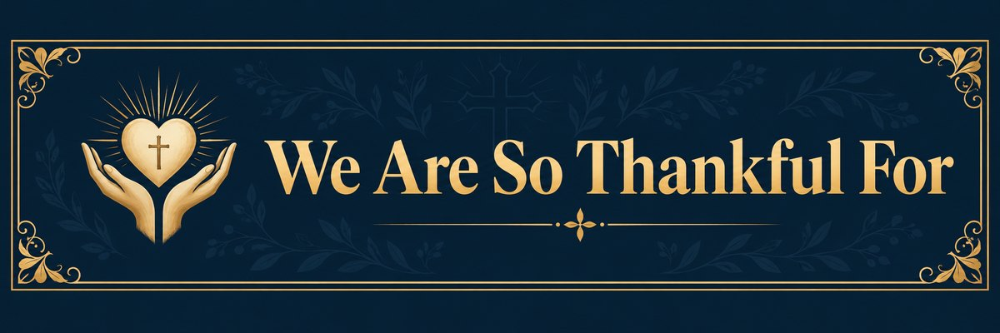

|
|
Coats for FamiliesWinter clothing collection until November 6, 2026. Donate coats, jackets, sweaters, hoodies, scarves, gloves and boots by the elevator, at the bottom of the stairs near the back parking entrance. |
Fellowship snack volunteersHelp provide snacks after worship. Sign up on the narthex bulletin board or contact Maureen Nicholson. |
Christmas marketDecember 2026. Kathy to add the date, time, location and participation details. |
|
 |
Our summer gardensDon Rumble & Nancy Matthews who work so hard each summer to plant and care for the beautiful gardens around St. Paul’s. Your creative efforts are a gift to so many of us, as well as those who are simply passing by our church. |
Leadership during Pastor Al’s time awayRev. Susan McIlveen, Rev. Bill Vanderstelt and Rev. Heather Vanderstelt for their leadership in covering for Pastor Al during his vacation and time away at other congregations. We are blessed to have you in our midst. |
Summer worship volunteersAll those who continued to serve in the various roles we need to keep our worship services going throughout the summer. |
Big Brothers Big Sisters BreakfastA heartfelt thank you to everyone who supported the Relationship Ministry Team's breakfast for Big Brothers Big Sisters on October 3. Approximately 40 guests enjoyed a warm breakfast, made possible by the generosity and teamwork of our volunteers. Thank you to everyone who prepared food, served, welcomed families, and helped make this new outreach initiative a meaningful experience. |
Supporting Don and His FamilyOur sincere thanks to everyone who supported Don and his family during their recent time of loss. From preparing food and arranging tables to washing dishes, helping with the gathering, and offering comfort, your kindness and compassion have been deeply appreciated. Please continue to keep Don and his family in your prayers. |
|
St. Paul’s Church 56 Thames Street S, Ingersoll, ON N5C 2S9 |
|
Office: Tuesday–Friday, 9:30 AM–12:30 PM Sunday worship: 10:30 AM |
|
Website: stpaulsingersoll.ca YouTube: St. Paul’s Ingersoll |